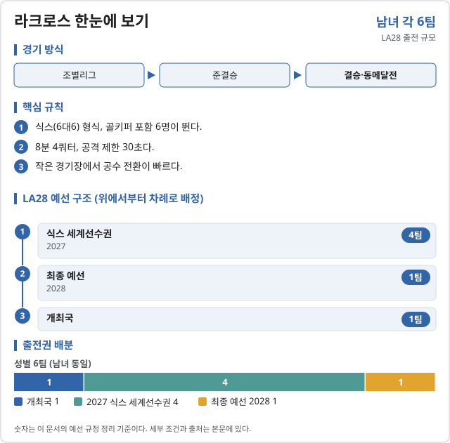

라크로스 (Lacrosse)

LA28 출전 확정 2026.10.31 기준
| 국가 | 경로 | 비고 |
|---|---|---|
| 개최국 | 앞선 예선 대회에 모두 참가하는 조건 |
2026 대륙 선수권(팬암·아시아태평양·유럽·아프리카)은 2027 세계선수권 출전을 가리는 대회라 올림픽 자리를 주지 않는다.
예선 규정
| 경로 | 팀 수 | 단위 |
|---|---|---|
| 남자 · 개최국 | 1 | 팀 |
| 남자 · 2027 식스 세계선수권 | 4 | 팀 |
| 남자 · 최종 예선 2028 | 1 | 팀 |
| 여자 · 개최국 | 1 | 팀 |
| 여자 · 2027 식스 세계선수권 | 4 | 팀 |
| 여자 · 최종 예선 2028 | 1 | 팀 |
예선 일정
| 대회 | 기간 | 장소 |
|---|---|---|
| 대륙 예선 (아시아태평양 2026.10) | 2026.09–12 | 쉬쉰코스트 |
| 2027 식스 세계선수권 | 2027 말 (미정) | 미정 |
| 최종 예선 | 2028.03–04 | 미정 |
직전 올림픽 메달리스트
2024 파리 올림픽 미채택 · 해당 없음
대한민국
확보 쿼터: 미정. 예선 결과 발표 후 갱신한다.